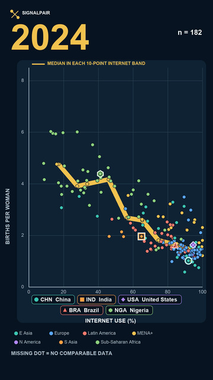

Individuals using the Internet
Indivíduos que usam a Internet
- Unit
- Unidade
- % of population
- Code
- Código
- IT.NET.USER.ZS
- Upstream
- Origem
- ITU via WDI

EPISODE 001 • EVIDENCE RECORD
EPISÓDIO 001 • REGISTRO DE EVIDÊNCIAS
A country-level view of two worldwide changes from 2000 to 2024—without turning their association into a causal claim.
Uma visão, no nível de países, de duas mudanças mundiais entre 2000 e 2024—sem transformar a associação em afirmação causal.
Research question
Pergunta de pesquisa
Predeclared expectation
Expectativa pré-declarada
Measures
Medidas
Coverage
Cobertura
217 WDI countries and territories; aggregates excluded.
217 países e territórios do WDI; agregados excluídos.
2000–2024
180 to 204 entities, depending on the year.
180 a 204 entidades, dependendo do ano.
A missing dot means no comparable pair for that entity-year—not zero and not disappearance.
Um ponto ausente significa ausência de par comparável naquele país-ano—não significa zero nem desaparecimento.
Observed pattern
Padrão observado

Among 175 countries/territories with comparable data in both 2000 and 2024, 156 (89.1%) moved toward higher Internet use and lower total fertility. The annual country-level association was negative in all 25 years; median Spearman rho was −0.786.
Entre 175 países/territórios com dados comparáveis em 2000 e 2024, 156 (89,1%) se moveram em direção a maior uso da Internet e menor fecundidade total. A associação anual no nível dos países foi negativa nos 25 anos; a mediana de Spearman foi −0,786.
Pattern ≠ proof of cause. These are country and territory averages, not observations of individual people or families.
Padrão ≠ prova de causa. São médias de países e territórios, não observações de pessoas ou famílias.
Analysis record
Registro da análise
One row per country/territory-year. A mark appears only when both indicators are present.
Uma linha por país/território-ano. Um ponto aparece apenas quando os dois indicadores estão presentes.
The same 175 endpoint-complete entities were compared from 2000 to 2024 with equal entity weight.
As mesmas 175 entidades completas nos extremos foram comparadas entre 2000 e 2024, com pesos iguais.
Spearman rank association was computed separately for every year; it is descriptive and non-causal.
A associação de postos de Spearman foi calculada separadamente para cada ano; é descritiva e não causal.
The gold line is median fertility within fixed 10-percentage-point Internet-use bands—not a regression or forecast.
A linha dourada é a fecundidade mediana em faixas fixas de 10 pontos percentuais de uso da Internet—não é regressão nem previsão.
Interpretation limits
Limites de interpretação
The analysis cannot tell whether Internet access changed fertility, fertility affected adoption, or both moved with income, education, urbanization, reproductive health, institutions, age structure and other changes.
A análise não identifica se a Internet alterou a fecundidade, se a fecundidade afetou a adoção ou se ambas mudaram com renda, educação, urbanização, saúde reprodutiva, instituições, estrutura etária e outras mudanças.
The unit is a country/territory-year. The pattern cannot be translated into a claim about individual Internet users, women or families.
A unidade é país/território-ano. O padrão não pode ser transformado em afirmação sobre usuários individuais, mulheres ou famílias.
Regional strength varies. Europe & Central Asia is near zero in the within-region diagnostic, and North America and South Asia do not meet the project's n≥10 display rule.
A força regional varia. Europa e Ásia Central fica próxima de zero no diagnóstico intrarregional, e América do Norte e Sul da Ásia não atendem à regra de exibição n≥10.
Annual complete cases range from 180 to 204. The visible 2017→2018 drop is missing Internet data, not sudden country movement.
Os casos anuais completos variam de 180 a 204. A queda visível de 2017→2018 é ausência de dados de Internet, não movimento súbito dos países.
Ending the analysis in 2023 preserves the direction, but the exact 2024 values may change in later official releases.
Encerrar a análise em 2023 preserva a direção, mas os valores exatos de 2024 podem mudar em versões oficiais futuras.
Formal rules were frozen before the final analysis, but an endpoint feasibility plot had already been inspected.
As regras formais foram congeladas antes da análise final, mas um gráfico preliminar de viabilidade já havia sido inspecionado.
Data and audit trail
Dados e trilha de auditoria
Frozen WDI snapshot: source 2, last updated 2026-07-13. The video itself is not yet published.
Snapshot WDI congelado: fonte 2, atualizada em 13/07/2026. O vídeo ainda não foi publicado.